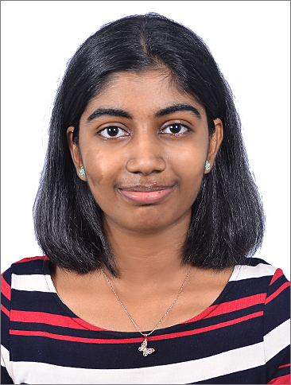

Riya Rajesh Vichattu

Summary
I am a hardworking and driven individual who is always willing to learn more and improve my skills.
Education
- B.Tech in Electronics and Communication
Govt. Model Engineering College
CGPA : 9.12
- CBSE Class XII
Saraswati Vidyaniketan Public School
Percentage : 89.8
-
CBSE Class X
The Choice School
Percentage : 95.8
Skills
- Technical Skills: Python, Verilog, Microcontroller Programming, Proteus, LTSpice, HTML, CSS
- Soft Skills: Communication, Time Management, Work Ethic, Problem Solving, Team Player, Leadership, Hardworking, Creativity
- Interests: Telecommunication Networks, VLSI Design and Simulation, Web Development, Artificial Intelligence
Activities
- Participated in VLSI workshop, a part of Petrichor’24 conducted by IIT Palakkad.
- Attended the first International Conference on Trends in Engineering Systems and Technologies 2024 organized by Govt. Model Engineering College.
- Participated in a PCB Design workshop conducted by Excel 2022 and Rever Tech.
- Completed a Web Design course on Udemy.
- Completed a Digital System Design couse offered by IIT Roopar from NPTEL.
- Obtained certification in VLSI SOC Design course by Maven Silicon
- Currently pursuing a Web Development course on Udemy.
Other